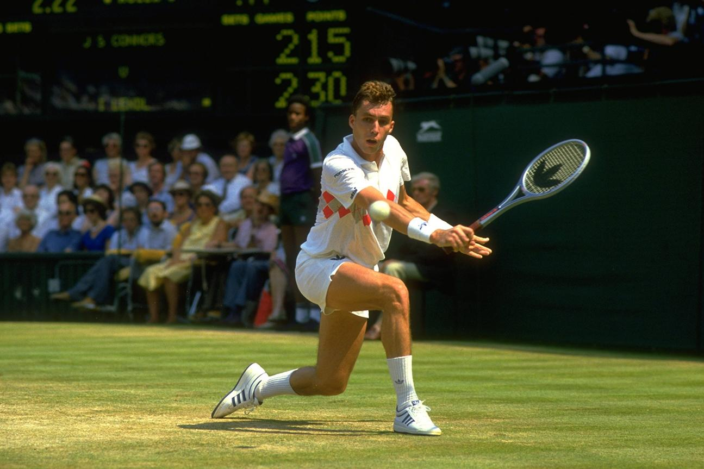

Uvjerljivo najveći teniser devedesetih, Pete Sampras je osvojio 14 Grand Slam titula. Wimbledon je bio najdominantniji Samprasov turnir, gdje je osvojio sedam od osam titula od 1993-2000. Ima ukupno 64 titule, što je šesto mjesto u Open Eri. Nadimka "Pistol Pete", Sampras je imenovan u Međunarodnu tenisku kuću slavnih 2007. godine. Dvoboje Samprasa na terenu s Andreom Agasijem bilo je rado gledati. To su bile bitke kroz vijekove. Kruna njihovih 34 meča bilo je četvrtfinale US Opena 2001. godine, gdje je Sampras pobijedio Agassija u blisko osporavanom takmičenju od četiri seta.
Kao jedan od vodećih tenisera 90-ih, Andre Agassi zasluženo se probio među prvih 10. Američki profesionalac imao je uspona i padova u karijeri dužoj od 20 godina, ali je bez sumnje bio vrlo nadaren teniser. Osvojio je 60 turnira, uključujući osam grand slamova, što ga je učinilo vrlo cijenjenim imenom. Agassi je bio prvi igrač koji je osvojio grand slam na tri različite podloge u historiji tenisa. Ima zlatnu olimpijsku medalju, a ujedno je i prvi koji je osvojio sve grand slamove u jednoj kalendarskoj godini. Njegova karizmatična ličnost poklapala se s vještim teniskim sposobnostima što ga je učinilo jednim od najboljih i najzabavnijih tenisera ikada.
Još jedna teniska legenda, Novak Đoković sigurno će pasti kao jedan od najdominantnijih tenisera svih vremena, možda GOAT. Ovaj 33-godišnjak iz Srbije na svoje ime ima 17 Grand Slam naslova, osam s Australian Opena, pet iz Wimbledona, tri iz US Open-a i jedan s French Opena. Đoković je poznat i po svojoj efikasnosti na terenu i po kultnim obračunima sa nekim drugim teniskim legendama na ovoj listi, uključujući Rafaela Nadela i Rogera Federera. Đoković je predstavljao Srbiju dobro postajući prvi muški igrač Srbije koji je osvojio Grand Slam titulu u singlu i prvi koji je zaradio prvo mjesto na ATP-u. Đoković drži taj plasman 287 uzastopnih sedmica, što ga čini drugim svih vremena. Procjenjuje se da teniska zvijezda vrijedi 220 miliona dolara, a njegovih 144 miliona novčanih nagrada najveća je svih vremena.
Sa španske Majorke, „Rafa“ je i dalje aktivan, ali mogao bi se povući s prilično dobrom karijerom. Mladi vunderkind, Nadal počeo se baviti tim sportom zajedno s nogometom, ali je na kraju odabrao tenis kao svoj glavni prioritet. Nadal je definitivno donio pravu odluku. Osvojio je 19 Grand Slam naslova pojedinačno. To je drugo najviše za muškog tenisera. Dvanaest od 19 Nadalovih Grand Slam naslova stiglo je na Otvoreno prvenstvo Francuske. Nadal je 209 tjedana na prvom mjestu na svijetu. To uključuje svrstavanje u vrh teniskog svijeta pet različitih godina. Njegove bitke s Rodžerom Federerom su klasika. Nadal je u međusobnom posjedu s rekordom 24-16 protiv Federera.
Živa legenda u tenisu, Roger Federer osvojio je nevjerovatnih 1.242 singles mečeva u 22-godišnjoj profesionalnoj karijeri. Ima najviše Grand Slam naslova pojedinačno (20) u historiji za muškog igrača. Federerova dosljednost je posebna. Od turnira u Wimbledonu 2005. do US Opena 2007. Federer je bio ili pobjednik ili višešampion. Federerova svestranost možda je ono što se najviše ističe u njegovoj karijeri. Odličan server i povratnik, Federer je mogao pobijediti protivnike bilo iz ofanzivne bilo iz defanzivne pozicije na terenu. Također je prikupio priličnu kolekciju novčanih nagrada, odnijevši kući 129.946.683 dolara tokom svoje karijere. To je drugo mjesto svih vremena.
JIMMY CONNORS
Sredinom sedamdesetih godina niko nije dominirao tenisom više od Jimmya Connorsa. Samo 1974. godine Connors je imao nevjerojatni rekord 99-4 i osvojio je tri Grand Slam turnira na koja je ušao. Connorsu je zabranjeno igranje na Otvorenom prvenstvu Francuske 1974. godine zbog povezanosti sa svjetskim ekipnim tenisom, a to ga je spriječilo u mogućem premetanju za Grand Slam. Uprkos vrhuncu 1970-ih, Connors je imao dugu i impresivnu tenisku karijeru, povukao se 1996. Connors i dalje drži rekord u ATP naslovima na turneji sa 109.
BJORN BORG
Tihi je Borg dominirao tenisom kasnih 1970-ih i imao je nekoliko nezaboravnih mečeva s Johnom McEnroeom i Jimmyjem Connosom. Borg je dominirao Wimbledonom, osvajajući naslov pet uzastopnih godina od 1976. do 1980. Unatoč relativno kratkoj karijeri (povukao se 1983. u dobi od 26 godina), Borg je osvojio 11 Grand Slam naslova, sve u Wimbledonu i na Otvorenom prvenstvu Francuske. Borg je bio prvi igrač moderne ere koji je osvojio više od 10 glavnih titula. U mojoj knjizi Bjorn Borg mogao je biti pet najboljih svih vremena da je nastavio igrati, a ne povukao se dok je izgledao u cvijetu karijere.
IVAN LENDL
On je bio najdominantniji igrač 1980-ih. Lendl je svoje snažne udarce zemljom, forps forpsom i nevjerojatnom kondicijom iscrpio. Četiri je godine bio najbolje rangirani igrač svijeta, a 270 tjedana držao je prvo mjesto na svijetu, što je bio rekord tog dana. Za razliku od mnogih svojih otvorenijih vršnjaka, Lendl je bio poznat po tome što je puštao svoju igru da govori.
